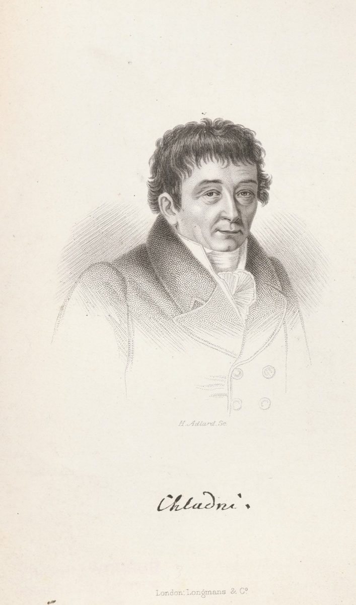
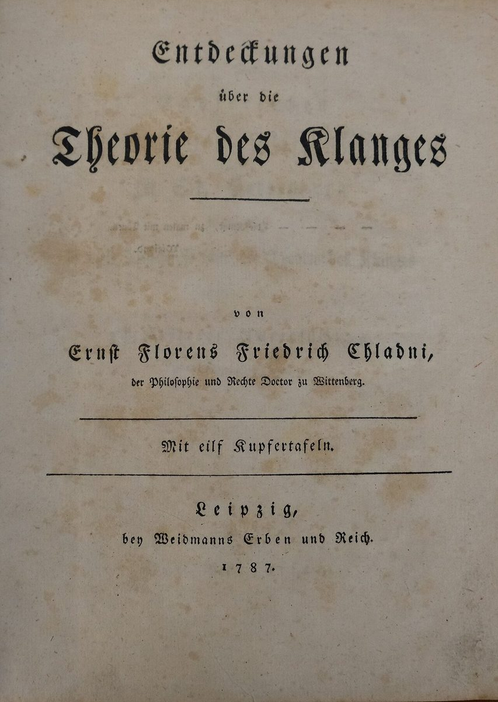
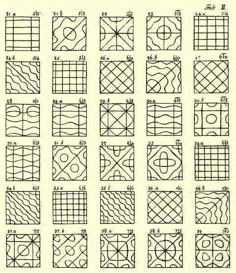
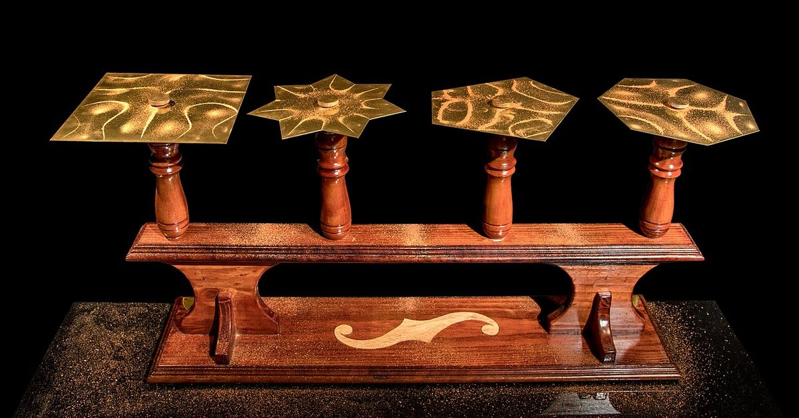

Wave Physics · Standing Waves & Resonance
Cymatics: The Geometry of Sound
Sprinkle sand on a metal plate, bow the edge, and the chaos-looking grains suddenly leap into a perfect geometric pattern — a mandala drawn by pure vibration. This is cymatics: making the invisible shape of a sound wave visible. Below is a physics engine, not a canned animation: it solves the equation for a real bending plate, in real units, for the metal, size and thickness you choose, and the sand obeys the same rule real sand does: it can only leave the plate where the plate accelerates faster than gravity.
What Is Cymatics?
When you vibrate a rigid surface at one of its natural resonant frequencies, most of it doesn't just shake randomly — the whole surface locks into a stationary interference pattern called a standing wave. Some regions barely move at all (nodes); others swing through the largest possible displacement (antinodes). Loose material on top gets thrown away from the antinodes and collects along the still, quiet nodal lines — tracing the invisible wave pattern in visible grains.
A short history
- 1680Robert Hooke ran a violin bow along the edge of a flour-dusted glass plate and watched the flour leap into geometric patterns — the first recorded observation of the effect.
- 1787Ernst Chladni, a German physicist and musician, systematized the technique with sand on bowed brass plates and published the patterns — still called Chladni figures today. He demonstrated them to Napoleon.
- 1831Michael Faraday observed a related standing-wave effect on the surface of a vibrating fluid — now called Faraday waves.
- 1800sLord Rayleigh worked out the mathematics of plate vibration in detail, explaining why nodal-line counts scale with frequency the way they do.
- 1967Hans Jenny, a Swiss physician, coined the word cymatics (from Greek kyma, "wave") and extended the experiments to fluids, pastes, and powders using electronic oscillators — the direct ancestor of the simulator below.
Click a picture to enlarge it.




The Physics: Modes, Nodes & Resonance
A thin plate bends instead of stretching. Its motion obeys the Kirchhoff–Love plate equation, where w is how far the plate has moved up or down, ρ is the material's density, h its thickness, and p the push from the driver or bow:
D is the plate's bending stiffness. It grows with the material's stiffness E (Young's modulus) and with the cube of the thickness, so a plate twice as thick is eight times stiffer. ν (Poisson's ratio) says how much the material bulges sideways when you squeeze it.
Natural frequencies
Only certain shapes, the eigenmodes, can vibrate on their own. Each one has a fixed frequency:
Here s is half the plate's width and λ is a pure number that depends only on the mode's shape and on ν. That one line explains the whole Plate panel: double the thickness and every pitch doubles; double the width and every pitch drops two octaves; swap steel for aluminium and almost nothing changes, because their stiffness-to-weight ratios E/ρ are nearly equal.
Bending waves are dispersive
Ripples on a plate are bending waves, and high pitches travel faster than low ones: speed = √(2πf) · (D/ρh)¼. Their wavelength shrinks only as 1/√f, so going up four times in frequency only halves the spacing between nodal lines. The simulator shows the bending wavelength live; nodal lines sit about half a wavelength apart.
Who can ring which mode
A wave driver bolted to the centre shakes the plate straight up and down, so it can only feed a mode that moves the plate's centre of mass. On a perfect square plate that's only the fully symmetric modes; on a circle, only the ring patterns with no diameters. A violin bow on the edge pushes at one point and can ring almost anything except the modes with a node right where you bow. This is a selection rule, and you can test it: switch the excitation and watch peaks appear and vanish on the response curve. Real plates are never perfectly symmetric, so in a classroom the "forbidden" modes still show up faintly.
Why Sand, Powder, Water & Oobleck Look So Different
The plate's vibration is the same for all four. What changes is how each material responds to it.
440 Hz vs. 432 Hz: Who Actually Decided Concert Pitch?
Concert pitch — the frequency assigned to the note A above middle C, the reference every instrument in an orchestra tunes to — has never been a law of nature. It's a human agreement, and for most of musical history there wasn't one: it drifted for centuries and was fought over for just as long.
The pitch-inflation problem
Before any standard existed, orchestral pitch tended to creep upward — a brighter, sharper-tuned ensemble was often judged more brilliant and impressive than its rivals, so pitch kept rising, hall by hall, decade by decade. By the early 1800s "A" could mean anywhere from about 415 Hz (a Baroque-era pitch still used today in historically-informed performance) to well past 450 Hz, depending on the country, the concert hall, and the year. The same piece could sit nearly a semitone higher in one city than another.
Two real, practical fixes
In 1859, the French government legally fixed a national standard — the diapason normal — at A = 435 Hz, likely the first government-mandated tuning pitch in history, motivated partly by singers whose voices were being strained by the constant upward creep. In 1884, composer Giuseppe Verdi independently proposed his own diapason scientifico to the Italian government at A = 432 Hz — again for singers' vocal health, not for any mystical reason.
How 440 Hz became the international standard
In 1834, physicist Johann Scheibler had already proposed 440 Hz at a conference in Stuttgart, based on precise tuning-fork beat measurements. Pitch still stayed inconsistent across countries for another century. In 1939, an international conference in London — driven mainly by British and American standards bodies and broadcasters like the BBC, who needed one consistent pitch for radio, recordings, and touring orchestras with interchangeable instruments — recommended A = 440 Hz. It was formally ratified as international standard ISO 16 in 1955 and reaffirmed in 1975.
So nobody "decided" 440 Hz in the sense of a single choice. It's the settled output of a century-long, multi-country standardization fight, resolved by committee for practical reasons: interchangeable instruments, consistent broadcasts, and orchestras that could tour without retuning.
What about 432 Hz today?
Some musicians and audio engineers still tune to A432, often citing a subjectively "warmer" or "rounder" sound — a legitimate aesthetic preference, echoing Verdi's original practical proposal. The difference from 440 Hz is small (about 31.8 cents, roughly a third of a semitone) but audible, especially in direct comparison.
Claims that go further — that 432 Hz is mathematically "the frequency of the universe," aligns with the Schumann resonance or sacred geometry, or produces measurable healing or DNA effects — are not supported by any peer-reviewed acoustic or physiological research. Treat those as folklore layered on top of a real, practical 19th-century tuning debate, not as established science.
Interactive Chladni Plate
This is a real plate with real numbers. Choose the metal, the size and the thickness, bolt it to a wave driver or pick up a bow, and dial the signal generator anywhere from 20 Hz to 20,000 Hz. Everything you see comes from the plate equation above, in SI units: frequencies in hertz, displacement in micrometres, acceleration in multiples of g, sand that hops for as long as real sand would. It makes no sound; it shows what the plate does.
The centre disc is the bolt (it moves with the driver). The bar at the bottom left is a real-size scale. Drag in 3D to orbit. With the bow selected, click near the edge to move it. Keyboard: ← → nudge the frequency by 1 Hz (Shift: 0.1 Hz), PageUp / PageDown jump between modes.
Experiments to Run
Each of these is a real lab you can do with the simulator, then check against a real plate if your class has one. Write your prediction before you try it.
- Count the modes. Square steel plate, 24 cm, 0.8 mm, wave driver. Use "Mode ▶" to step through the first five resonances. Write down each frequency. Do the patterns get more complicated as the pitch rises?
- Thicker plate, higher pitch. Note the frequency of one mode, then double the thickness. Predict the new frequency first. Then double the plate's width instead. What does the formula say?
- Steel vs. aluminium vs. glass. Aluminium is about a third as stiff as steel, and about a third as heavy. Predict whether its modes will be higher, lower or the same, then test it. Try acrylic too.
- Turn it up. Find a strong resonance with sand, then raise the driver amplitude in steps. Turn on the Γ < 1 overlay. What happens to the width of the sand lines, and why?
- The forbidden modes. With the wave driver, look at the response curve. Switch to the bow. Which new peaks appear? Move the bow along the edge until one of them vanishes: what is special about that spot?
- Faraday's vacuum. Choose fine powder and drive a strong mode. Where does it gather? Now switch to Vacuum and re-sprinkle. Explain the difference in one sentence.
- Q and the ring-down. At a resonance, press "Stop drive" and time how long the displacement takes to fall to about a third. Repeat with Q halved. Compare with Q/(πf).
Real-World Applications
Go Deeper: Simulating Waves with Machine Learning
This simulator solves the plate equation directly, with numerical methods developed in the 1900s. A newer approach in physics research trains machine learning models to predict how waves scatter and propagate, using huge libraries of real simulation data instead of hand-written equations. The Well is a free, 15TB collection of physics simulation datasets — including acoustic scattering off obstacles and maze-like geometries — released by Polymathic AI for exactly this kind of research.
Try It At Home (Or In Class)
The simulator follows real physics, but nothing beats watching it happen. A plastic-wrap drum on a speaker is a stretched membrane, not a stiff plate, so its frequencies follow a different rule; the sand mechanism is the same. If your class has a wave driver and a metal Chladni plate, check the simulator's predictions against it.
- Stretch plastic wrap tightly over a large bowl, or use a thin metal baking sheet, and place it flat on top of a speaker or subwoofer (a phone speaker works for small-scale tests).
- Open a free tone-generator app or website and start around 40–60 Hz.
- Sprinkle a thin, even layer of table salt or fine sand on the surface.
- Slowly sweep the frequency upward. Patterns will snap into focus at specific frequencies and dissolve into chaos in between: those focused moments are the resonant modes. Turn the volume up on one and the sand lines get thinner, exactly as Γ predicts.
- Swap materials between sweeps and compare what each one reveals.
| Material | What you'll see | Notes |
|---|---|---|
| Table salt / fine sand | Crisp, thin nodal lines | Best all-around choice — classic Chladni figures |
| Flour | Similar lines, softer edges | Fluffier, easily disturbed by air currents |
| Thin water film | Shimmering ripples over the whole surface | Keep the film shallow and away from electronics |
| Cornstarch + water (oobleck) | Chaotic jumping fingers/spikes | The viral "oobleck on a speaker" effect — non-Newtonian jamming, not a clean mode shape |
Practice Problems
Easy1. A standing wave has adjacent nodes spaced 0.25 m apart. Nodes on a standing wave are spaced λ/2 apart — what is the wavelength λ (in m)?
Easy2. On a sand-covered Chladni plate, the grains collect where the plate's vertical displacement is…
Medium3. Which material would you expect to reveal the full standing-wave height field — both crests and troughs — rather than only the nodal lines?
Medium4. A 1.0 mm steel plate has a mode at 440 Hz. The plate is replaced by an identical one 1.5 mm thick. Using f ∝ h, where does that mode move (in Hz)?
Challenge5. At a 500 Hz resonance the antinodes move ±20 µm. What is Γ = ω²A/g there (use g = 9.81 m/s² and ω = 2πf)? Will sand hop?